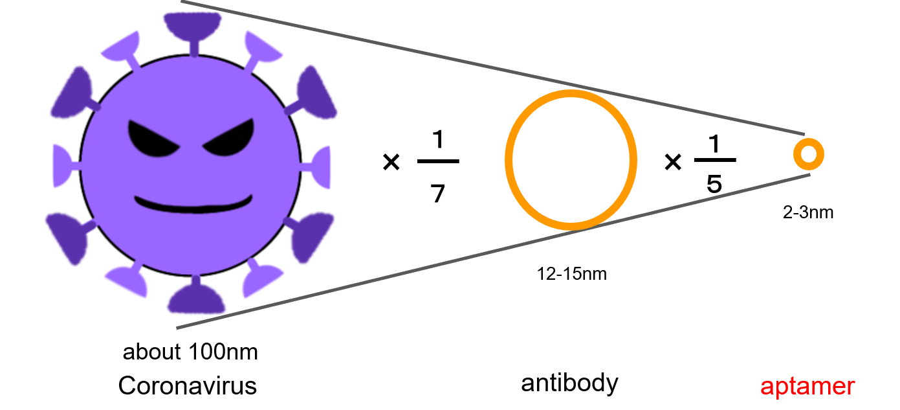
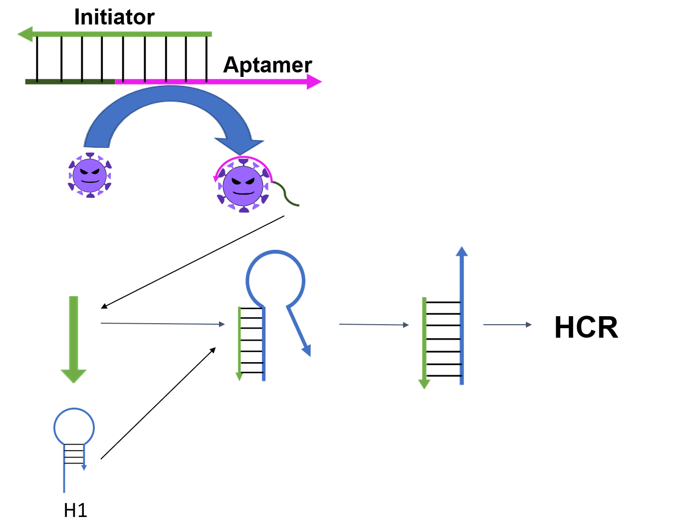

Solution
So, I wondered if we could make a test kit that is easily done at home without specialized knowledge. The reason why anyone can perform the test, even asymptomatic patients can easily understand the test result. I think that it is possible to inspect at low cost and amateurs can inspected easily as conditions for that. (そこで今回我々は、専門の知識がなくとも家庭レベルで簡単にできる検査キットを作ることが出来ないだろうかと考えた。誰でも検査ができるようになり、無症状患者の方でも手軽に検査結果がわかるからである。これにより検査の敷居が下がり、特に無症状患者の検査及び検出が容易になることが期待される。そのための条件として要求されることは、簡単で素人にも検査できること、低コストで検査ができること、高価な機械を必要としないことである。)
The brief introduction to the idea(簡易的な内容)
Our idea is that the color change of the solution gives a visible result with or without the coronavirus. The color change of the solution uses the aggregation effect of gold nanoparticles and hybridization chain reaction (HCR). Instead of reacting with the coronavirus, it reacts with the spike protein on its surface.(我々のアイディアは溶液の色の変化によってコロナウイルスの有無が分かる家庭レベルで使える検査キットです。その溶液の色の変化にはHCRにより伸長した二本鎖DNAの増幅と金ナノ粒子凝集効果を用います。コロナウイルスに反応させると言っても実際にはその表面にあるスパイクタンパク質に反応させます。これにより、コストや知識、機材が必要なウイルス内部のRNAを抽出する作業を行う必要がなくなります。)

Comparison with the conventional method(従来手法との比較)
We focused on aptamers instead of antibodies and antigens, which are often used in conventional tests for new coronavirus, and HCR instead of PCR to determine the presence or absence of coronavirus. Aptamers have some merits over antibodies and antigens. First, their size are small. Their size are 2-3nm and you can find that it is very small. We thought that the small size would react efficiently with the coronavirus spike protein. Secondly, if the sequence that specifically reacts with the protein is clarified, it can be easily synthesized at low cost. (今回我々はコロナウイルスの有無を判断するものとして、従来の検査で良く用いられる抗体や抗原ではなくアプタマーを、PCRではなくHCRに注目しました。アプタマーにはこれらと比較していくつか利点があります。１つ目として大きさが小さいことです。その大きさは2-3nmであり、コロナウイルスのスパイクタンパク質に比べて非常に小さいことがわかります。サイズが小さいことでコロナウイルスのスパイクタンパク質と効率よく反応するのではないかと考えました。２つ目にタンパク質と特異的に反応する配列がわかると低コストで容易に合成できるということです。)
By combining this aptamer with a initiator, it becomes the starting point of a sequence of reactions. When the aptamer reacts with the spike protein, the single strand on the aptamer side binds to the spike protein and an initiator is produced. When this initiator reacts with the hairpin DNA, the HCR reaction starts.（このアプタマーをイニシエーターと複合させることで一連の反応の起点とします。アプタマーがスパイクタンパク質と反応するとアプタマー側の一本鎖がスパイクタンパク質と結合し、イニシエーターが生成されます。このイニシエーターにより、HCRの反応が開始されます。）
PCR is expensive to test. It is impossible to use places that are contaminated for PCR. On the other hand, the samples used for testing at HCR are not very expensive. HCR does not need reverse transcription of RNA and therefore does not need machines.(PCRはコンタミ（汚染されている）に極端に弱く、検査するのが高額である。一方、HCRは検査するのに使うサンプルはそんなに高額ではない。また、HCRはRNAを逆転写する必要がないため高額な機械も必要ない。)
The reason to target the spike protein(表面のスパイクタンパク質を標的にする理由)
Many tests focus on the RNA inside, but when targeting the RNA inside, it must be extracted with breaking the membrane called the envelope and without breaking the structure of the RNA. The process is time-consuming and costly, and requires knowledge and machine. We paid attention to the spike protein on the surface of the coronavirus because I thought that it would not fulfill our conditions which “oRdinary people can easily do Color Change at Home” (多くの検査にはその内部にあるRNAに注目するのですが、内部にあるRNAを標的とするにはエンベロープという膜を破壊させ、構造を壊さないように抽出しなければなりません。その作業には時間とコストがかかり、また知識や機材が必要であり、自分たちの条件である「一般の人が家庭で簡単にできる」ということを満たさないと考え表面にあるスパイクタンパク質に注目しました。)